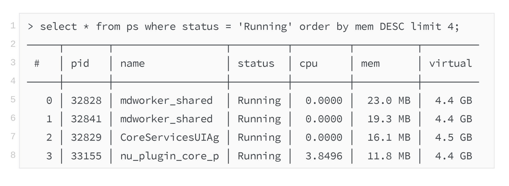
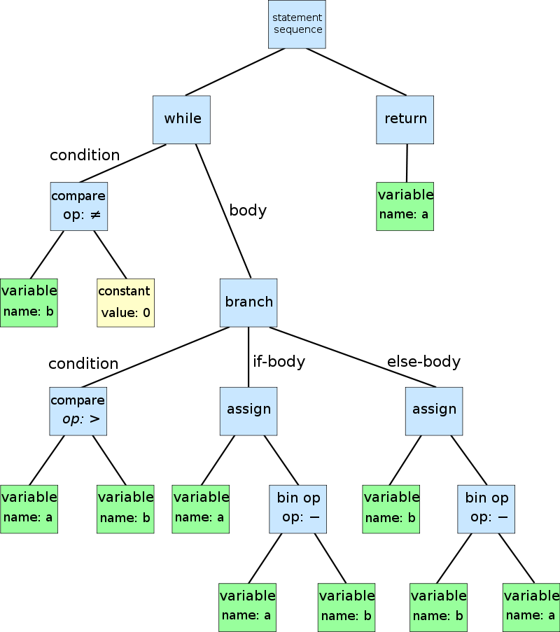
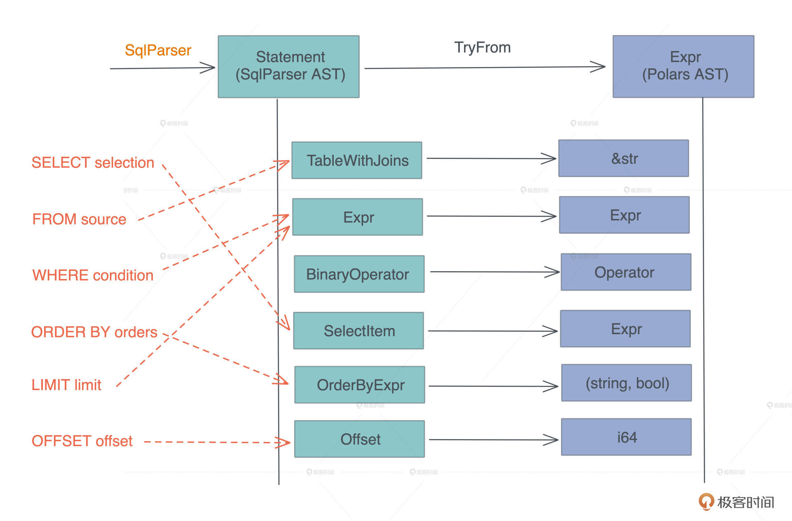
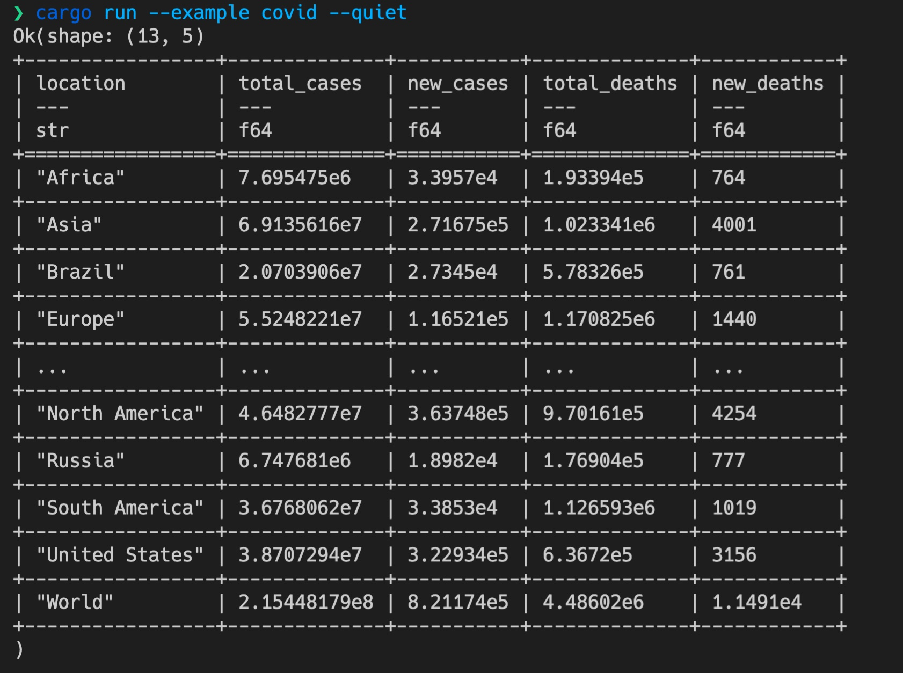
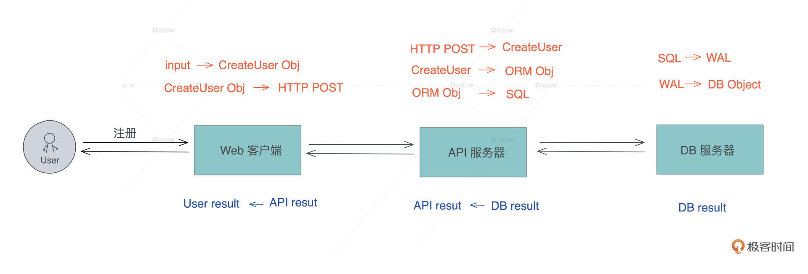
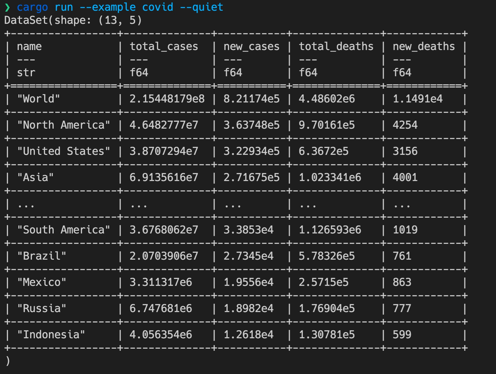
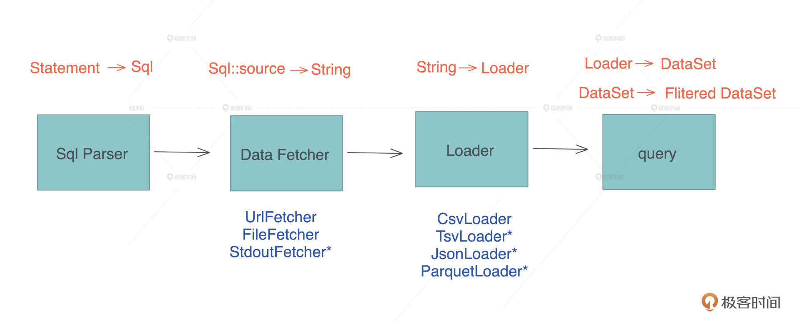
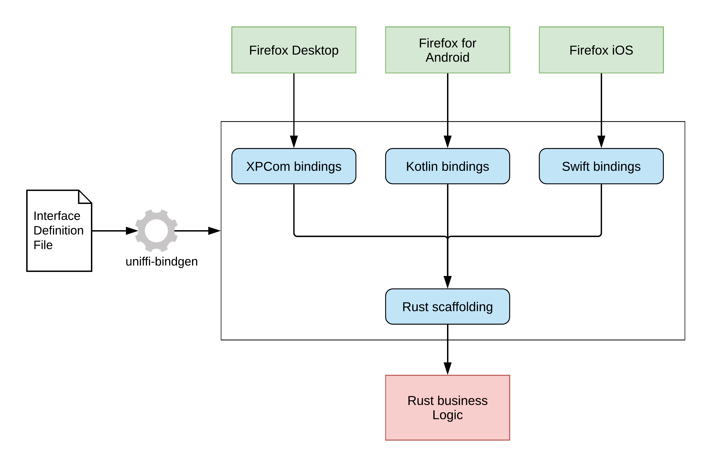
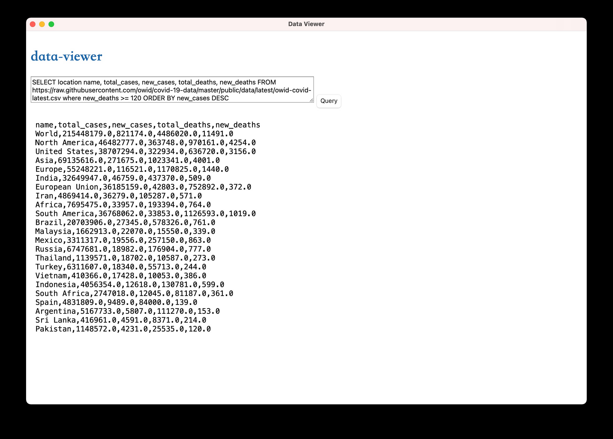

- 00 开篇词 让Rust成为你的下一门主力语言.md
- 01 内存：值放堆上还是放栈上，这是一个问题.md
- 02 串讲：编程开发中，那些你需要掌握的基本概念.md
- 03 初窥门径：从你的第一个Rust程序开始！.md
- 04 get hands dirty：来写个实用的CLI小工具.md
- 05 get hands dirty：做一个图片服务器有多难？.md
- 06 get hands dirty：SQL查询工具怎么一鱼多吃？.md
- 07 所有权：值的生杀大权到底在谁手上？.md
- 08 所有权：值的借用是如何工作的？.md
- 09 所有权：一个值可以有多个所有者么？.md
- 10 生命周期：你创建的值究竟能活多久？.md
- 11 内存管理：从创建到消亡，值都经历了什么？.md
- 12 类型系统：Rust的类型系统有什么特点？.md
- 13 类型系统：如何使用trait来定义接口？.md
- 14 类型系统：有哪些必须掌握的trait？.md
- 15 数据结构：这些浓眉大眼的结构竟然都是智能指针？.md
- 16 数据结构：Vec_T_、&[T]、Box_[T]_ ，你真的了解集合容器么？.md
- 17 数据结构：软件系统核心部件哈希表，内存如何布局？.md
- 18 错误处理：为什么Rust的错误处理与众不同？.md
- 19 闭包：FnOnce、FnMut和Fn，为什么有这么多类型？.md
- 20 4 Steps ：如何更好地阅读Rust源码？.md
- 21 阶段实操（1）：构建一个简单的KV server-基本流程.md
- 22 阶段实操（2）：构建一个简单的KV server-基本流程.md
- 23 类型系统：如何在实战中使用泛型编程？.md
- 24 类型系统：如何在实战中使用trait object？.md
- 25 类型系统：如何围绕trait来设计和架构系统？.md
- 26 阶段实操（3）：构建一个简单的KV server-高级trait技巧.md
- 27 生态系统：有哪些常有的Rust库可以为我所用？.md
- 28 网络开发（上）：如何使用Rust处理网络请求？.md
- 29 网络开发（下）：如何使用Rust处理网络请求？.md
- 30 Unsafe Rust：如何用C++的方式打开Rust？.md
- 31 FFI：Rust如何和你的语言架起沟通桥梁？.md
- 32 实操项目：使用PyO3开发Python3模块.md
- 33 并发处理（上）：从atomics到Channel，Rust都提供了什么工具？.md
- 34 并发处理（下）：从atomics到Channel，Rust都提供了什么工具？.md
- 35 实操项目：如何实现一个基本的MPSC channel？.md
- 36 阶段实操（4）：构建一个简单的KV server-网络处理.md
- 37 阶段实操（5）：构建一个简单的KV server-网络安全.md
- 38 异步处理：Future是什么？它和async_await是什么关系？.md
- 39 异步处理：async_await内部是怎么实现的？.md
- 40 异步处理：如何处理异步IO？.md
- 41 阶段实操（6）：构建一个简单的KV server-异步处理.md
- 42 阶段实操（7）：构建一个简单的KV server-如何做大的重构？.md
- 43 生产环境：真实世界下的一个Rust项目包含哪些要素？.md
- 44 数据处理：应用程序和数据如何打交道？.md
- 45 阶段实操（8）：构建一个简单的KV server-配置_测试_监控_CI_CD.md
- 46 软件架构：如何用Rust架构复杂系统？.md
- 加餐 Rust2021版次问世了！.md
- 加餐 代码即数据：为什么我们需要宏编程能力？.md
- 加餐 宏编程（上）：用最“笨”的方式撰写宏.md
- 加餐 宏编程（下）：用 syn_quote 优雅地构建宏.md
- 加餐 愚昧之巅：你的Rust学习常见问题汇总.md
- 加餐 期中测试：参考实现讲解.md
- 加餐 期中测试：来写一个简单的grep命令行.md
- 加餐 这个专栏你可以怎么学，以及Rust是否值得学？.md
- 大咖助场 开悟之坡（上）：Rust的现状、机遇与挑战.md
- 大咖助场 开悟之坡（下）：Rust的现状、机遇与挑战.md
- 特别策划 学习锦囊（一）：听听课代表们怎么说.md
- 特别策划 学习锦囊（三）：听听课代表们怎么说.md
- 特别策划 学习锦囊（二）：听听课代表们怎么说.md
- 用户故事 绝望之谷：改变从学习开始.md
- 用户故事 语言不仅是工具，还是思维方式.md
- 结束语 永续之原：Rust学习，如何持续精进？.md
06 get hands dirty：SQL查询工具怎么一鱼多吃？
你好，我是陈天。
通过 HTTPie 和 Thumbor 的例子，相信你对 Rust 的能力和代码风格有了比较直观的了解。之前我们说过Rust的应用范围非常广，但是这两个例子体现得还不是太明显。
有同学想看看，在实际工作中有大量生命周期标注的代码的样子；有同学对 Rust 的宏好奇；有同学对 Rust 和其它语言的互操作感兴趣；还有同学想知道 Rust 做客户端的感觉。所以，我们今天就来用一个很硬核的例子把这些内容都涵盖进来。
话不多说，我们直接开始。
SQL
我们工作的时候经常会跟各种数据源打交道，数据源包括数据库、Parquet、CSV、JSON 等，而打交道的过程无非是：数据的获取（fetch）、过滤（filter）、投影（projection）和排序（sort）。
做大数据的同学可以用类似 Spark SQL 的工具来完成各种异质数据的查询，但是我们平时用 SQL 并没有这么强大。因为虽然用 SQL 对数据库做查询，任何 DBMS 都支持，如果想用 SQL 查询 CSV 或者 JSON，就需要很多额外的处理。
所以如果能有一个简单的工具，不需要引入 Spark，就能支持对任何数据源使用 SQL 查询，是不是很有意义？
比如，如果你的 shell 支持这样使用是不是爽爆了？- 再比如，我们的客户端会从服务器 API 获取数据的子集，如果这个子集可以在前端通过 SQL 直接做一些额外查询，那将非常灵活，并且用户可以得到即时的响应。
软件领域有个著名的格林斯潘第十定律：
任何 C 或 Fortran 程序复杂到一定程度之后，都会包含一个临时开发的、不合规范的、充满程序错误的、运行速度很慢的、只有一半功能的 Common Lisp 实现。
我们仿照它来一个程序君第四十二定律：
任何 API 接口复杂到一定程度后，都会包含一个临时开发的、不合规范的、充满程序错误的、运行速度很慢的、只有一半功能的 SQL 实现。
所以，我们今天就来设计一个可以对任何数据源使用 SQL 查询，并获得结果的库如何？当然，作为一个 MVP（Mimimu Viable Product），我们就暂且只支持对 CSV 的 SQL 查询。不单如此，我们还希望这个库可以给 Python3 和 Node.js 使用。
猜一猜这个库要花多少行代码？今天难度比较大，怎么着要 500 行吧？我们暂且以 500 行代码为基准来挑战。
设计分析
我们首先需要一个 SQL 解析器。在 Rust 下，写一个解析器并不困难，可以用 serde、用任何 parser combinator 或者 PEG parser 来实现，比如 nom 或者 pest。不过 SQL 解析，这种足够常见的需求，Rust 社区已经有方案，我们用 sqlparser-rs。
接下来就是如何把 CSV 或者其它数据源加载为 DataFrame。
做过数据处理或者使用过 pandas 的同学，应该对 DataFrame 并不陌生，它是一个矩阵数据结构，其中每一列可能包含不同的类型，可以在 DataFrame 上做过滤、投影和排序等操作。
在 Rust 下，我们可以用 polars ，来完成数据从 CSV 到 DataFrame 的加载和各种后续操作。
确定了这两个库之后，后续的工作就是：如何把 sqlparser 解析出来的抽象语法树 AST（Abstract Syntax Tree），映射到 polars 的 DataFrame 的操作上。
抽象语法树是用来描述复杂语法规则的工具，小到 SQL 或者某个 DSL，大到一门编程语言，其语言结构都可以通过 AST 来描述，如下图所示（来源：wikipedia）：

如何在 SQL 语法和 DataFrame 的操作间进行映射呢？比如我们要从数据中选出三列显示，那这个 “select a, b, c” 就要能映射到 DataFrame 选取 a、b、c 三列输出。
polars 内部有自己的 AST 可以把各种操作聚合起来，最后一并执行。比如对于 “where a > 10 and b < 5”， Polars 的表达式是：col("a").gt(lit(10)).and(col("b").lt(lit(5)))。col 代表列，gt/lt 是大于/小于，lit 是字面量的意思。
有了这个认知，“对 CSV 等源进行 SQL 查询”核心要解决的问题变成了，如何把一个 AST（ SQL AST ）转换成另一个 AST（ DataFrame AST ）。
等等，这不就是宏编程（对于 Rust 来说，是过程宏）做的事情么？因为进一步分析二者的数据结构，我们可以得到这样的对应关系：

你看，我们要做的主要事情其实就是，在两个数据结构之间进行转换。所以，写完今天的代码，你肯定会对宏有足够的信心。
宏编程并没有什么大不了的，抛开 quote/unquote，它主要的工作就是把一棵语法树转换成另一颗语法树，而这个转换的过程深入下去，不过就是数据结构到数据结构的转换而已。所以一句话总结：宏编程的主要流程就是实现若干 From 和 TryFrom，是不是很简单。
当然，这个转换的过程非常琐碎，如果语言本身没有很好的模式匹配能力，进行宏编程绝对是对自己非人道的折磨。
好在 Rust 有很棒的模式匹配支持，它虽然没有 Erlang/Elixir 的模式匹配那么强大，但足以秒杀绝大多数的编程语言。待会你在写的时候，能直观感受到。
创建一个 SQL 方言
好，分析完要做的事情，接下来就是按部就班写代码了。
我们用 cargo new queryer --lib 生成一个库。用 VSCode 打开生成的目录，创建和 src 平级的 examples，并在 Cargo.toml 中添加代码：
[[example]]
name = "dialect"
[dependencies]
anyhow = "1" # 错误处理，其实对于库我们应该用 thiserror，但这里简单起见就不节外生枝了
async-trait = "0.1" # 允许 trait 里有 async fn
sqlparser = "0.10" # SQL 解析器
polars = { version = "0.15", features = ["json", "lazy"] } # DataFrame 库
reqwest = { version = "0.11", default-features = false, features = ["rustls-tls"] } # 我们的老朋友 HTTP 客户端
tokio = { version = "1", features = ["fs"]} # 我们的老朋友异步库，我们这里需要异步文件处理
tracing = "0.1" # 日志处理
[dev-dependencies]
tracing-subscriber = "0.2" # 日志处理
tokio = { version = "1", features = ["full"]} # 在 example 下我们需要更多的 tokio feature
依赖搞定。因为对 sqlparser 的功能不太熟悉，这里写个 example 尝试一下，它会在 examples 目录下寻找 dialect.rs 文件。
所以，我们创建 examples/dialect.rs 文件，并写一些测试 sqlparser 的代码：
use sqlparser::{dialect::GenericDialect, parser::Parser};
fn main() {
tracing_subscriber::fmt::init();
let sql = "SELECT a a1, b, 123, myfunc(b), * \
FROM data_source \
WHERE a > b AND b < 100 AND c BETWEEN 10 AND 20 \
ORDER BY a DESC, b \
LIMIT 50 OFFSET 10";
let ast = Parser::parse_sql(&GenericDialect::default(), sql);
println!("{:#?}", ast);
}
这段代码用一个 SQL 语句来测试Parser::parse_sql会输出什么样的结构。当你写库代码时，如果遇到不明白的第三方库，可以用撰写 example 这种方式先试一下。-
我们运行 cargo run --example dialect查看结果：
Ok([Query(
Query {
with: None,
body: Select(
Select {
distinct: false,
top: None,
projection: [ ... ],
from: [ TableWithJoins { ... } ],
selection: Some(BinaryOp { ... }),
...
}
),
order_by: [ OrderByExpr { ... } ],
limit: Some(Value( ... )),
offset: Some(Offset { ... })
}
])
我把这个结构简化了一下，你在命令行里看到的，会远比这个复杂。
写到第9行这里，你有没有突发奇想，如果 SQL 中的 FROM 子句后面可以接一个 URL 或者文件名该多好？这样，我们可以从这个 URL 或文件中读取数据。就像开头那个 “select * from ps” 的例子，把 ps 命令作为数据源，从它的输出中很方便地取数据。
但是普通的 SQL 语句是不支持这种写法的，不过 sqlparser 允许你创建自己的 SQL 方言，那我们就来尝试一下。
创建 src/dialect.rs 文件，添入下面的代码：
use sqlparser::dialect::Dialect;
#[derive(Debug, Default)]
pub struct TyrDialect;
// 创建自己的 sql 方言。TyrDialect 支持 identifier 可以是简单的 url
impl Dialect for TyrDialect {
fn is_identifier_start(&self, ch: char) -> bool {
('a'..='z').contains(&ch) || ('A'..='Z').contains(&ch) || ch == '_'
}
// identifier 可以有 ':', '/', '?', '&', '='
fn is_identifier_part(&self, ch: char) -> bool {
('a'..='z').contains(&ch)
|| ('A'..='Z').contains(&ch)
|| ('0'..='9').contains(&ch)
|| [':', '/', '?', '&', '=', '-', '_', '.'].contains(&ch)
}
}
/// 测试辅助函数
pub fn example_sql() -> String {
let url = "https://raw.githubusercontent.com/owid/covid-19-data/master/public/data/latest/owid-covid-latest.csv";
let sql = format!(
"SELECT location name, total_cases, new_cases, total_deaths, new_deaths \
FROM {} where new_deaths >= 500 ORDER BY new_cases DESC LIMIT 6 OFFSET 5",
url
);
sql
}
#[cfg(test)]
mod tests {
use super::*;
use sqlparser::parser::Parser;
#[test]
fn it_works() {
assert!(Parser::parse_sql(&TyrDialect::default(), &example_sql()).is_ok());
}
}
这个代码主要实现了 sqlparser 的 Dialect trait，可以重载 SQL 解析器判断标识符的方法。之后我们需要在 src/lib.rs 中添加
mod dialect;
引入这个文件，最后也写了一个测试，你可以运行 cargo test 测试一下看看。-
测试通过！现在我们可以正常解析出这样的 SQL 了：
SELECT * from https://abc.xyz/covid-cases.csv where new_deaths >= 500
Cool！你看，大约用了 10 行代码（第 7 行到第 19 行），通过添加可以让 URL 合法的字符，就实现了一个自己的支持 URL 的 SQL 方言解析。
为什么这么厉害？因为通过 trait，你可以很方便地做控制反转（Inversion of Control），在 Rust 开发中，这是很常见的一件事情。
实现 AST 的转换
刚刚完成了SQL解析，接着就是用polars做AST转换了。
由于我们不太了解 polars 库，接下来还是先测试一下怎么用。创建 examples/covid.rs（记得在 Cargo.toml 中添加它哦），手工实现一个 DataFrame 的加载和查询：
use anyhow::Result;
use polars::prelude::*;
use std::io::Cursor;
#[tokio::main]
async fn main() -> Result<()> {
tracing_subscriber::fmt::init();
let url = "https://raw.githubusercontent.com/owid/covid-19-data/master/public/data/latest/owid-covid-latest.csv";
let data = reqwest::get(url).await?.text().await?;
// 使用 polars 直接请求
let df = CsvReader::new(Cursor::new(data))
.infer_schema(Some(16))
.finish()?;
let filtered = df.filter(&df["new_deaths"].gt(500))?;
println!(
"{:?}",
filtered.select((
"location",
"total_cases",
"new_cases",
"total_deaths",
"new_deaths"
))
);
Ok(())
}
如果我们运行这个 example，可以得到一个打印得非常漂亮的表格，它从 GitHub 上的 owid-covid-latest.csv 文件中，读取并查询 new_deaths 大于 500 的国家和区域：- 
我们最终要实现的就是这个效果，通过解析一条做类似查询的 SQL，来进行相同的数据查询。怎么做呢？
今天一开始已经分析过了，主要的工作就是把 sqlparser 解析出来的 AST 转换成 polars 定义的 AST。再回顾一下 SQL AST 的输出：
Ok([Query(
Query {
with: None,
body: Select(
Select {
distinct: false,
top: None,
projection: [ ... ],
from: [ TableWithJoins { ... } ],
selection: Some(BinaryOp { ... }),
...
}
),
order_by: [ OrderByExpr { ... } ],
limit: Some(Value( ... )),
offset: Some(Offset { ... })
}
])
这里的 Query 是 Statement enum 其中一个结构。SQL 语句除了查询外，还有插入数据、删除数据、创建表等其他语句，我们今天不关心这些，只关心 Query。
所以，可以创建一个文件 src/convert.rs，先定义一个数据结构 Sql 来描述两者的对应关系，然后再实现 Sql 的 TryFrom trait：
/// 解析出来的 SQL
pub struct Sql<'a> {
pub(crate) selection: Vec<Expr>,
pub(crate) condition: Option<Expr>,
pub(crate) source: &'a str,
pub(crate) order_by: Vec<(String, bool)>,
pub(crate) offset: Option<i64>,
pub(crate) limit: Option<usize>,
}
impl<'a> TryFrom<&'a Statement> for Sql<'a> {
type Error = anyhow::Error;
fn try_from(sql: &'a Statement) -> Result<Self, Self::Error> {
match sql {
// 目前我们只关心 query (select ... from ... where ...)
Statement::Query(q) => {
...
}
}
}
}
框有了，继续写转换。我们看 Query 的结构：它有一个 body，是 Select 类型，其中包含 projection、from、select。在 Rust 里，我们可以用一个赋值语句，同时使用模式匹配加上数据的解构，将它们都取出来：
let Select {
from: table_with_joins,
selection: where_clause,
projection,
group_by: _,
..
} = match &q.body {
SetExpr::Select(statement) => statement.as_ref(),
_ => return Err(anyhow!("We only support Select Query at the moment")),
};
一句话，从匹配到取引用，再到将引用内部几个字段赋值给几个变量，都完成了，真是太舒服了！这样能够极大提高生产力的语言，你怎能不爱它？
我们再看一个处理 Offset 的例子，需要把 sqlparser 的 Offset 转换成 i64，同样，可以实现一个 TryFrom trait。这次是在 match 的一个分支上，做了数据结构的解构。
use sqlparser::ast::Offset as SqlOffset;
// 因为 Rust trait 的孤儿规则，我们如果要想对已有的类型实现已有的 trait，
// 需要简单包装一下
pub struct Offset<'a>(pub(crate) &'a SqlOffset);
/// 把 SqlParser 的 offset expr 转换成 i64
impl<'a> From<Offset<'a>> for i64 {
fn from(offset: Offset) -> Self {
match offset.0 {
SqlOffset {
value: SqlExpr::Value(SqlValue::Number(v, _b)),
..
} => v.parse().unwrap_or(0),
_ => 0,
}
}
}
是的，数据的解构也可以在分支上进行，如果你还记得第三讲中谈到的 if let/while let，也是这个用法。这样对模式匹配的全方位支持，你用得越多，就会越感激 Rust 的作者，尤其在开发过程宏的时候。
从这段代码中还可以看到，定义的数据结构 Offset 使用了生命周期标注 <'a>，这是因为内部使用了 SqlOffset 的引用。有关生命周期的知识，我们很快就会讲到，这里你暂且不需要理解为什么要这么做。
整个 src/convert.rs 主要都是通过模式匹配，进行不同子类型之间的转换，代码比较无趣，而且和上面的代码类似，我就不贴了，你可以在这门课程的 GitHub repo 下的 06_queryer/queryer/src/convert.rs 中获取。
未来你在 Rust 下写过程宏（procedure macro），干的基本就是这个工作，只不过，最后你需要把转换后的 AST 使用 quote 输出成代码。在这个例子里，我们不需要这么做，polars 的 lazy 接口直接能处理 AST。
说句题外话，我之所以不厌其烦地讲述数据转换的这个过程，是因为它是我们编程活动中非常重要的部分。你想想，我们写代码，主要都在处理什么？绝大多数处理逻辑都是把数据从一个接口转换成另一个接口。
以我们熟悉的用户注册流程为例：
- 用户的输入被前端校验后，转换成 CreateUser 对象，然后再转换成一个 HTTP POST 请求。
- 当这个请求到达服务器后，服务器将其读取，再转换成服务器的 CreateUser 对象，这个对象在校验和正规化（normalization）后被转成一个 ORM 对象（如果使用 ORM 的话），然后 ORM 对象再被转换成 SQL，发送给数据库服务器。
- 数据库服务器将 SQL 请求包装成一个 WAL（Write-Ahead Logging），这个 WAL 再被更新到数据库文件中。
整个数据转换过程如下图所示：
这样的处理流程，由于它和业务高度绑定，往往容易被写得很耦合，久而久之就变成了难以维护的意大利面条。好的代码，应该是每个主流程都清晰简约，代码恰到好处地出现在那里，让人不需要注释也能明白作者在写什么。
这就意味着，我们要把那些并不重要的细节封装在单独的地方，封装的粒度以一次写完、基本不需要再变动为最佳，或者即使变动，它的影响也非常局部。
这样的代码，方便阅读、容易测试、维护简单，处理起来更是一种享受。Rust 标准库的 From/TryFrom trait ，就是出于这个目的设计的，非常值得我们好好使用。
从源中取数据
完成了 AST 的转换，接下来就是从源中获取数据。
我们通过对 Sql 结构的处理和填充，可以得到 SQL FROM 子句里的数据源，这个源，我们规定它必须是以 http(s):// 或者 file:// 开头的字符串。因为，以 http 开头我们可以通过 URL 获取内容，file 开头我们可以通过文件名，打开本地文件获取内容。
所以拿到了这个描述了数据源的字符串后，很容易能写出这样的代码：
/// 从文件源或者 http 源中获取数据
async fn retrieve_data(source: impl AsRef<str>) -> Result<String> {
let name = source.as_ref();
match &name[..4] {
// 包括 http/https
"http" => Ok(reqwest::get(name).await?.text().await?),
// 处理 file://<filename>
"file" => Ok(fs::read_to_string(&name[7..]).await?),
_ => Err(anyhow!("We only support http/https/file at the moment")),
}
}
代码看起来很简单，但未来并不容易维护。因为一旦你的 HTTP 请求获得的结果需要做一些后续的处理，这个函数很快就会变得很复杂。那该怎么办呢？
如果你回顾前两讲我们写的代码，相信你心里马上有了答案：可以用 trait 抽取 fetch 的逻辑，定义好接口，然后改变 retrieve_data 的实现。
所以下面是 src/fetcher.rs 的完整代码：
use anyhow::{anyhow, Result};
use async_trait::async_trait;
use tokio::fs;
// Rust 的 async trait 还没有稳定，可以用 async_trait 宏
#[async_trait]
pub trait Fetch {
type Error;
async fn fetch(&self) -> Result<String, Self::Error>;
}
/// 从文件源或者 http 源中获取数据，组成 data frame
pub async fn retrieve_data(source: impl AsRef<str>) -> Result<String> {
let name = source.as_ref();
match &name[..4] {
// 包括 http/https
"http" => UrlFetcher(name).fetch().await,
// 处理 file://<filename>
"file" => FileFetcher(name).fetch().await,
_ => return Err(anyhow!("We only support http/https/file at the moment")),
}
}
struct UrlFetcher<'a>(pub(crate) &'a str);
struct FileFetcher<'a>(pub(crate) &'a str);
#[async_trait]
impl<'a> Fetch for UrlFetcher<'a> {
type Error = anyhow::Error;
async fn fetch(&self) -> Result<String, Self::Error> {
Ok(reqwest::get(self.0).await?.text().await?)
}
}
#[async_trait]
impl<'a> Fetch for FileFetcher<'a> {
type Error = anyhow::Error;
async fn fetch(&self) -> Result<String, Self::Error> {
Ok(fs::read_to_string(&self.0[7..]).await?)
}
}
这看上去似乎没有收益，还让代码变得更多。但它把 retrieve_data 和具体每一种类型的处理分离了，还是我们之前讲的思想，通过开闭原则，构建低耦合、高内聚的代码。这样未来我们修改 UrlFetcher 或者 FileFetcher，或者添加新的 Fetcher，对 retrieve_data 的变动都是最小的。
现在我们完成了SQL的解析、实现了从SQL到DataFrame的AST的转换，以及数据源的获取。挑战已经完成一大半了，就剩主流程逻辑了。
主流程
一般我们在做一个库的时候，不会把内部使用的数据结构暴露出去，而是会用自己的数据结构包裹它。
但这样代码有一个问题：原有数据结构的方法，如果我们想暴露出去，每个接口都需要实现一遍，虽然里面的代码就是一句简单的 proxy，但还是很麻烦。这是我自己在使用很多语言的一个痛点。
正好在 queryer 库里也会有这个问题：SQL 查询后的结果，会放在一个 polars 的 DataFrame 中，但我们不想直接暴露这个 DataFrame 出去。因为一旦这么做，未来我们想加额外的 metadata，就无能为力了。
所以我定义了一个 DataSet，包裹住 DataFrame。可是，我还想暴露 DataSet 的接口，它有好多函数，总不能挨个 proxy 吧？
不用。Rust 提供了 Deref 和 DerefMut trait 做这个事情，它允许类型在解引用时，可以解引用到其它类型。我们后面在介绍 Rust 常用 trait 时，会详细介绍这两个 trait，现在先来看的 DataSet 怎么处理：
#[derive(Debug)]
pub struct DataSet(DataFrame);
/// 让 DataSet 用起来和 DataFrame 一致
impl Deref for DataSet {
type Target = DataFrame;
fn deref(&self) -> &Self::Target {
&self.0
}
}
/// 让 DataSet 用起来和 DataFrame 一致
impl DerefMut for DataSet {
fn deref_mut(&mut self) -> &mut Self::Target {
&mut self.0
}
}
// DataSet 自己的方法
impl DataSet {
/// 从 DataSet 转换成 csv
pub fn to_csv(&self) -> Result<String> {
...
}
}
可以看到，DataSet 在解引用时，它的 Target 是 DataFrame，这样 DataSet 在用户使用时，就和 DataFrame 一致了；我们还为 DataSet 实现了 to_csv 方法，可以把查询结果生成出 CSV。
好，定义好 DataSet，核心函数 query 实现起来其实很简单：先解析出我们要的 Sql 结构，然后从 source 中读入一个 DataSet，做 filter/order_by/offset/limit/select 等操作，最后返回 DataSet。
DataSet 的定义和 query 函数都在 src/lib.rs，它的完整代码如下：
use anyhow::{anyhow, Result};
use polars::prelude::*;
use sqlparser::parser::Parser;
use std::convert::TryInto;
use std::ops::{Deref, DerefMut};
use tracing::info;
mod convert;
mod dialect;
mod loader;
mod fetcher;
use convert::Sql;
use loader::detect_content;
use fetcher::retrieve_data;
pub use dialect::example_sql;
pub use dialect::TyrDialect;
#[derive(Debug)]
pub struct DataSet(DataFrame);
/// 让 DataSet 用起来和 DataFrame 一致
impl Deref for DataSet {
type Target = DataFrame;
fn deref(&self) -> &Self::Target {
&self.0
}
}
/// 让 DataSet 用起来和 DataFrame 一致
impl DerefMut for DataSet {
fn deref_mut(&mut self) -> &mut Self::Target {
&mut self.0
}
}
impl DataSet {
/// 从 DataSet 转换成 csv
pub fn to_csv(&self) -> Result<String> {
let mut buf = Vec::new();
let writer = CsvWriter::new(&mut buf);
writer.finish(self)?;
Ok(String::from_utf8(buf)?)
}
}
/// 从 from 中获取数据，从 where 中过滤，最后选取需要返回的列
pub async fn query<T: AsRef<str>>(sql: T) -> Result<DataSet> {
let ast = Parser::parse_sql(&TyrDialect::default(), sql.as_ref())?;
if ast.len() != 1 {
return Err(anyhow!("Only support single sql at the moment"));
}
let sql = &ast[0];
// 整个 SQL AST 转换成我们定义的 Sql 结构的细节都埋藏在 try_into() 中
// 我们只需关注数据结构的使用，怎么转换可以之后需要的时候才关注，这是
// 关注点分离，是我们控制软件复杂度的法宝。
let Sql {
source,
condition,
selection,
offset,
limit,
order_by,
} = sql.try_into()?;
info!("retrieving data from source: {}", source);
// 从 source 读入一个 DataSet
// detect_content，怎么 detect 不重要，重要的是它能根据内容返回 DataSet
let ds = detect_content(retrieve_data(source).await?).load()?;
let mut filtered = match condition {
Some(expr) => ds.0.lazy().filter(expr),
None => ds.0.lazy(),
};
filtered = order_by
.into_iter()
.fold(filtered, |acc, (col, desc)| acc.sort(&col, desc));
if offset.is_some() || limit.is_some() {
filtered = filtered.slice(offset.unwrap_or(0), limit.unwrap_or(usize::MAX));
}
Ok(DataSet(filtered.select(selection).collect()?))
}
在 query 函数的主流程中，整个 SQL AST 转换成了我们定义的 Sql 结构，细节都埋藏在 try_into() 中，我们只需关注数据结构 Sql 的使用，怎么转换之后需要的时候再关注。
这就是关注点分离（Separation of Concerns），是我们控制软件复杂度的法宝。Rust 标准库中那些经过千锤百炼的 trait，就是用来帮助我们写出更好的、复杂度更低的代码。
主流程里有个 detect_content 函数，它可以识别文本内容，选择相应的加载器把文本加载为 DataSet，因为目前只支持 CSV，但未来可以支持 JSON 等其他格式。这个函数定义在 src/loader.rs 里，我们创建这个文件，并添入下面的代码：
use crate::DataSet;
use anyhow::Result;
use polars::prelude::*;
use std::io::Cursor;
pub trait Load {
type Error;
fn load(self) -> Result<DataSet, Self::Error>;
}
#[derive(Debug)]
#[non_exhaustive]
pub enum Loader {
Csv(CsvLoader),
}
#[derive(Default, Debug)]
pub struct CsvLoader(pub(crate) String);
impl Loader {
pub fn load(self) -> Result<DataSet> {
match self {
Loader::Csv(csv) => csv.load(),
}
}
}
pub fn detect_content(data: String) -> Loader {
// TODO: 内容检测
Loader::Csv(CsvLoader(data))
}
impl Load for CsvLoader {
type Error = anyhow::Error;
fn load(self) -> Result<DataSet, Self::Error> {
let df = CsvReader::new(Cursor::new(self.0))
.infer_schema(Some(16))
.finish()?;
Ok(DataSet(df))
}
}
同样，通过 trait，我们虽然目前只支持 CsvLoader，但保留了为未来添加更多 Loader 的接口。
好，现在这个库就全部写完了，尝试编译一下。如果遇到了问题，不要着急，可以在这门课的 GitHub repo 里获取完整的代码，然后对应修改你本地的错误。
如果代码编译通过了，你可以修改之前的 examples/covid.rs，使用 SQL 来查询测试一下：
use anyhow::Result;
use queryer::query;
#[tokio::main]
async fn main() -> Result<()> {
tracing_subscriber::fmt::init();
let url = "https://raw.githubusercontent.com/owid/covid-19-data/master/public/data/latest/owid-covid-latest.csv";
// 使用 sql 从 URL 里获取数据
let sql = format!(
"SELECT location name, total_cases, new_cases, total_deaths, new_deaths \
FROM {} where new_deaths >= 500 ORDER BY new_cases DESC",
url
);
let df1 = query(sql).await?;
println!("{:?}", df1);
Ok(())
}
Bingo！一切正常，我们完成了，用 SQL 语句请求网络上的某个 CSV ，并对 CSV 做查询和排序，返回结果的正确无误！- 
用 tokei 查看代码行数，可以看到，用了 375 行，远低于 500 行的目标！
❯ tokei src/
-------------------------------------------------------------------------------
Language Files Lines Code Comments Blanks
-------------------------------------------------------------------------------
Rust 5 466 375 22 69
-------------------------------------------------------------------------------
Total 5 466 375 22 69
-------------------------------------------------------------------------------
在这么小的代码量下，我们在架构上做了很多为解耦考虑的工作：整个架构被拆成了 Sql Parser、Fetcher、Loader 和 query 四个部分。- - 其中未来可能存在变化的 Fetcher 和 Loader 可以轻松扩展，比如我们一开始提到的那个 “select * from ps”，可以用一个 StdoutFetcher 和 TsvLoader 来处理。
支持其它语言
现在我们的核心代码写完了，有没有感觉自己成就感爆棚，实现的queryer工具可以在 Rust 下作为一个库，提供给其它 Rust 程序用，这很美妙。
但我们的故事还远不止如此。这么牛的功能，只能 Rust 程序员享用，太暴殄天物了。毕竟独乐乐不如众乐乐。所以，我们来试着将它集成到其它语言，比如常用的 Node.js/Python。
Node.js/Python 中有很多高性能的代码，都是 C/C++ 写的，但跨语言调用往往涉及繁杂的接口转换代码，所以用 C/C++ ，写这些接口转换的时候非常痛苦。
我们看看如果用 Rust 的话，能否避免这些繁文缛节？毕竟，我们对使用 Rust ，为其它语言提供高性能代码，有很高的期望，如果这个过程也很复杂，那怎么用得起来？
对于 queryer 库，我们想暴露出来的主要接口是：query，用户传入一个 SQL 字符串和一个输出类型的字符串，返回一个按照 SQL 查询处理过的、符合输出类型的字符串。比如对 Python 来说，就是下面的接口：
def query(sql, output = 'csv')
好，我们来试试看。
先创建一个新的目录 queryer 作为 workspace，把现有的 queryer 移进去，成为它的子目录。然后，我们创建一个 Cargo.toml，包含以下代码：
[workspace]
members = [
"queryer",
"queryer-py"
]
Python
我们在 workspace 的根目录下， cargo new queryer-py --lib ，生成一个新的 crate。在 queryer-py 下，编辑 Cargo.toml：
[package]
name = "queryer_py" # Python 模块需要用下划线
version = "0.1.0"
edition = "2018"
[lib]
crate-type = ["cdylib"] # 使用 cdylib 类型
[dependencies]
queryer = { path = "../queryer" } # 引入 queryer
tokio = { version = "1", features = ["full"] }
[dependencies.pyo3] # 引入 pyo3
version = "0.14"
features = ["extension-module"]
[build-dependencies]
pyo3-build-config = "0.14"
Rust 和 Python 交互的库是 pyo3，感兴趣你可以课后看它的文档。在 src/lib.rs 下，添入如下代码：
use pyo3::{exceptions, prelude::*};
#[pyfunction]
pub fn example_sql() -> PyResult<String> {
Ok(queryer::example_sql())
}
#[pyfunction]
pub fn query(sql: &str, output: Option<&str>) -> PyResult<String> {
let rt = tokio::runtime::Runtime::new().unwrap();
let data = rt.block_on(async { queryer::query(sql).await.unwrap() });
match output {
Some("csv") | None => Ok(data.to_csv().unwrap()),
Some(v) => Err(exceptions::PyTypeError::new_err(format!(
"Output type {} not supported",
v
))),
}
}
#[pymodule]
fn queryer_py(_py: Python, m: &PyModule) -> PyResult<()> {
m.add_function(wrap_pyfunction!(query, m)?)?;
m.add_function(wrap_pyfunction!(example_sql, m)?)?;
Ok(())
}
即使我不解释这些代码，你也基本能明白它在干嘛。我们为 Python 模块提供了两个接口 example_sql 和 query。
接下来在 queryer-py 目录下，创建 virtual env，然后用 maturin develop 构建 python 模块：
python3 -m venv .env
source .env/bin/activate
pip install maturin ipython
maturin develop
构建完成后，可以用 ipython 测试：
In [1]: import queryer_py
In [2]: sql = queryer_py.example_sql()
In [3]: print(queryer_py.query(sql, 'csv'))
name,total_cases,new_cases,total_deaths,new_deaths
India,32649947.0,46759.0,437370.0,509.0
Iran,4869414.0,36279.0,105287.0,571.0
Africa,7695475.0,33957.0,193394.0,764.0
South America,36768062.0,33853.0,1126593.0,1019.0
Brazil,20703906.0,27345.0,578326.0,761.0
Mexico,3311317.0,19556.0,257150.0,863.0
In [4]: print(queryer_py.query(sql, 'json'))
---------------------------------------------------------------------------
TypeError Traceback (most recent call last)
<ipython-input-4-7082f1ffe46a> in <module>
----> 1 print(queryer_py.query(sql, 'json'))
TypeError: Output type json not supported
Cool！仅仅写了 20 行代码，就让我们的模块可以被 Python 调用，错误处理也很正常。你看，在用 Rust 库的基础上，我们稍微写一些辅助代码，就能够让它和不同的语言集成起来。我觉得这是 Rust 非常有潜力的使用方向。
毕竟，对很多公司来说，原有的代码库想要完整迁移到 Rust 成本很大，但是通过 Rust 和各个语言轻便地集成，可以把部分需要高性能的代码迁移到 Rust，尝到甜头，再一点点推广。这样，Rust 就能应用起来了。
小结
回顾这周的 Rust 代码之旅，我们先做了个 HTTPie，流程简单，青铜级难度，你学完所有权，理解了基本的 trait 后就能写。
之后的 Thumbor，引入了异步、泛型和更多的 trait，白银级难度，在你学完类型系统，对异步稍有了解后，应该可以搞定。
今天的 Queryer，使用了大量的 trait ，来让代码结构足够符合开闭原则和关注点分离，用了不少生命周期标注，来减少不必要的内存拷贝，还做了不少复杂的模式匹配来获取数据，是黄金级难度，在学完本课程的进阶篇后，你应该可以理解这些代码。
很多人觉得 Rust 代码很难写，尤其是泛型数据结构和生命周期搅在一起的时候。但在前两个例子里，生命周期的标注只出现过了一次。所以，其实大部分时候，你的代码并不需要复杂的生命周期标注。
只要对所有权和生命周期的理解没有问题，如果你陷入了无休止的生命周期标注，和编译器痛苦地搏斗，那你也许要停下来先想一想：
编译器如此不喜欢我的写法，会不会我的设计本身就有问题呢？我是不是该使用更好的数据结构？我是不是该重新设计一下？我的代码是不是过度耦合了？
就像茴香豆的茴字有四种写法一样，同一个需求，用相同的语言，不同的人也会有不同的写法。但是，优秀的设计一定是产生简单易读的代码，而不是相反。
好，这周的代码之旅就告一段落了，接下来我们就要展开一段壮丽的探险，你将会像比尔博·巴金斯那样，在通往孤山的冒险之旅中，一点点探索迷人的中土世界。等到我们学完了所有权、类型系统、trait、智能指针等内容之后，再来看这三个实例，相信你会有不一样的感悟。我也会在后续的课程中，根据已学内容，回顾今天写的代码，继续优化和完善它们。
思考题
Node.js 的处理和 Python 非常类似，但接口不太一样，就作为今天的思考题让你尝试一下。小提示：Rust 和 nodejs 间交互可以使用 neon。
欢迎在留言区分享你的思考。你的 Rust 学习第六次打卡成功，我们下一讲见！
参考资料
我们的 queryer 库目前使用到了操作系统的功能，比如文件系统，所以它无法被编译成 WebAssembly。未来如果能移除对操作系统的依赖，这个代码还能被编译成 WASM，供 Web 前端使用。
如果想在 iOS/Android 下使用这个库，可以用类似 Python/Node.js 的方法做接口封装，Mozilla 提供了一个 uniffi 的库，它自己的 Firefox 各个端也是这么处理的：

对于桌面开发，Rust 下有一个很有潜力的客户端开发工具 tauri，它很有机会取代很多使用 Electron 的场合。
我写了一个简单的 tuari App 叫 data-viewer，如果你感兴趣的话，可以在 github repo 下的 data-viewer 目录下看 tauri 使用 queryer 的代码，下面是运行后的效果。为了让代码最简单，前端没有用任何框架，如果你是一名前端开发者，可以用 Vue 或者 React 加上一个合适的 CSS 库让整个界面变得更加友好。- 
© 2019 - 2023 Liangliang Lee. Powered by Vert.x and hexo-theme-book.